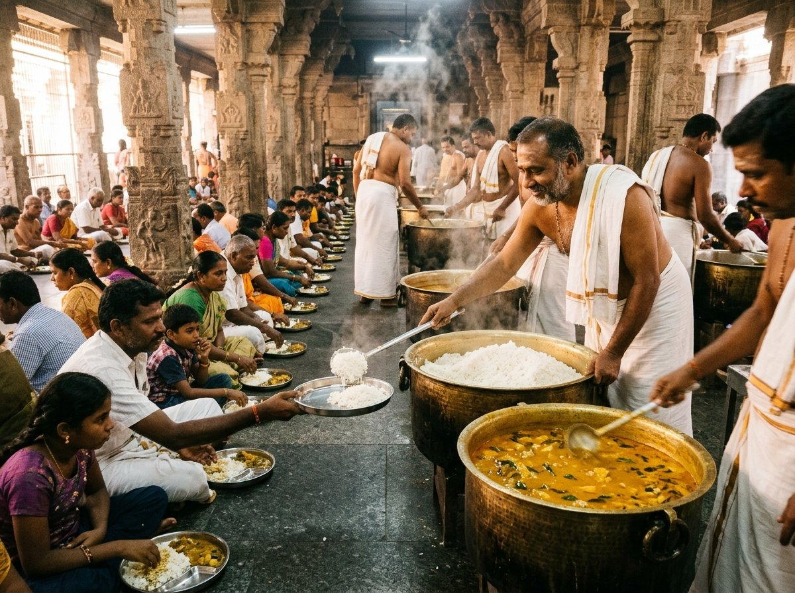
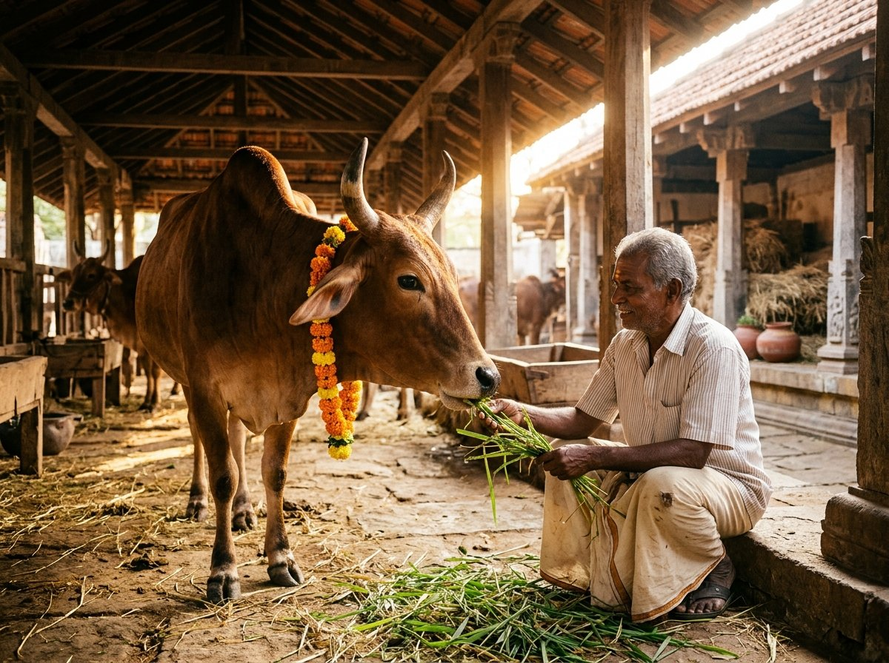
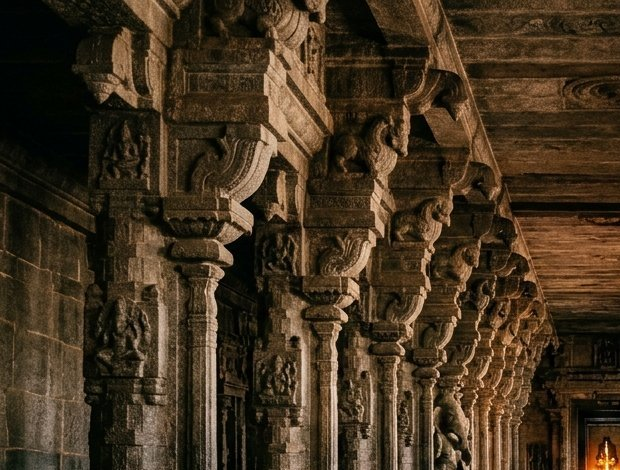

Food service
Feed 100 Pilgrims
Support the Annadanam programme. Explain serving schedule, eligibility and use of funds.
Choose a verified donation purpose and learn how contributions support temple worship, Annadanam, heritage conservation and community welfare.
These are categories from the project brief. Publish actual amounts, active funds and recipient details only after trust approval.

Support the Annadanam programme. Explain serving schedule, eligibility and use of funds.

Contribute to feed, shelter and veterinary care for the trust’s gaushala, if operated.

Support approved conservation and restoration work with transparent project updates.
Before enabling online payments, display the legal name of the receiving trust, official bank/payment details, donation purpose, terms, privacy notice and contact for receipt support.
80G tax benefits apply only where the trust and donation meet current legal requirements. Do not advertise tax exemption without verification.
This form does not process payments or issue receipts. Connect a compliant payment gateway and accounting workflow before accepting donations online.
Every contribution is handled through transparent verification steps before official receipts are issued.
Yes. Mention your intention when submitting a request so the temple office can advise on available dates and official recording options.
Tax exemptions apply only where the trust holds valid, current statutory approval. Confirm certificate details with the trust office before claiming deductions.
In-kind offerings for Annadanam or daily pooja can be coordinated directly at the temple office during official hours.
Contact the temple office directly via +91 98402 41890 or seva@sridharmakshetra.org with your transaction reference number.